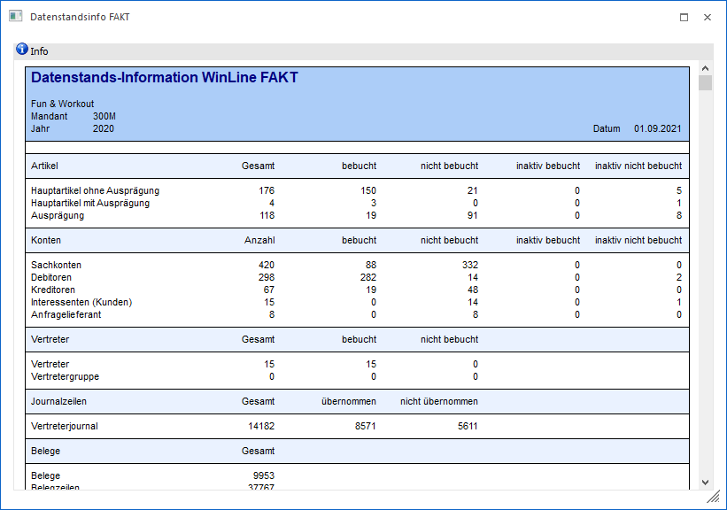

Die Datenstandsinformation der WinLine bietet einen übersichtlichen Überblick über alle Stammdatenbereiche von WinLine FAKT und wird über den Menüpunkt…
1 WinLine FAKT
1 Datei
1 Datenstands-Info
… aufgerufen.

Folgender Inhalt wird in der Datenstandsinformation dargestellt:
Ø Artikel
Auflistung der Artikeltypen "Hauptartikel ohne Ausprägung", "Hauptartikel mit Ausprägung" und "Ausprägung" mit folgenden Werten:
ü Gesamtanzahl der jeweiligen Artikel
ü wie viele Artikel sind bebucht
ü wie viele Artikel sind nicht bebucht
ü wie viele Artikel sind inaktiv bebucht
ü wie viele Artikel sind inaktiv nicht bebucht
Ø Konten
Auflistung der Kontentypen "Sachkonten", "Debitoren", "Kreditoren", "Interessenten(Kunden)" und "Anfragelieferant" mit folgenden Werten:
ü Gesamtanzahl der jeweiligen Kontenbereiche
ü wie viele Konten sind bebucht
ü wie viele Konten sind nicht bebucht
ü wie viele Konten sind inaktiv bebucht
ü wie viele Konten sind inaktiv nicht bebucht
Hinweis
Hauptbuchkonten, die nicht selbst direkt bebucht worden sind, werden nicht bei der Ermittlung der "Anzahl der bebuchten Konten" berücksichtigt.
Ø Vertreter
Die Vertreterinformation gibt Auskunft darüber, wie viele Vertreter bzw. Vertretergruppen angelegt, davon bebucht und davon nicht bebucht worden sind.
Ø Journalzeilen
Der Punkt Journalzeilen informiert darüber, wie viele Vertreterjournalzeilen im Datenstand vorhanden und wie viele davon bereits übernommen wurden.
Ø Belege
An dieser Stelle werden die Anzahl der bestehenden Belege, sowie die entsprechenden Belegzeilen dargestellt. In dem nächsten Bereich werden dann (nach Verkauf und Einkauf getrennt) die Anzahl der Belege nach den folgenden Kriterien aufgelistet:
ü nicht gedruckt
ü Angebot gedruckt
ü Aufträge gedruckt
ü Lieferscheine gedruckt
ü Fakturen gedruckt
Ø Journalzeilen
Unter Journalzeilen sind diese in die Buchungsschlüssel "L", "V", und "P" aufgegliedert. Dabei werden die Gesamtanzahl der Journalzeilen, sowie die einzelnen Perioden mengen-, und wertmäßig für das aktuelle Wirtschaftsjahr, sowie für die Vorjahre summiert angeführt.
Ø Artikelperioden
An dieser Stelle werden die Artikelperiodenzeilen gesamt und pro Periode für das aktuelle Wirtschaftsjahr, sowie gesamt für die Vorjahre, dargestellt.
Ø Statistik
Die Statistik gibt einen Überblick darüber, wie viele Belege "Gesamt", bzw. für "Einkauf" und "Verkauf" im aktuellen Wirtschaftsjahr, bzw. in den Vorjahren erfasst worden sind.
Buttons
Ø Anzeigen
Durch Anklicken des "Anzeigen"-Buttons wird die Datenstandsinformation aktualisiert.
Ø Ende
Die WinLine FAKT Datenstandsinformation wird geschlossen.
Ø Ausgabe Drucker
Durch Anklicken des Buttons "Ausgabe Drucker" wird die WinLine FAKT Datenstandsinformation am Drucker bzw. in den Spooler ausgegeben.
Ø Voreinstellung speichern
Durch Anwahl dieses Buttons erfolgt eine benutzerspezifische Speicherung aller im Fenster getätigten Einstellungen. Diese sogenannten "Voreinstellungen" können jederzeit wieder abgerufen werden und ermöglichen dadurch ein schnelleres und zielorientierteres Arbeiten (nähere Informationen entnehmen Sie bitte dem Kapitel "Die Voreinstellungen").